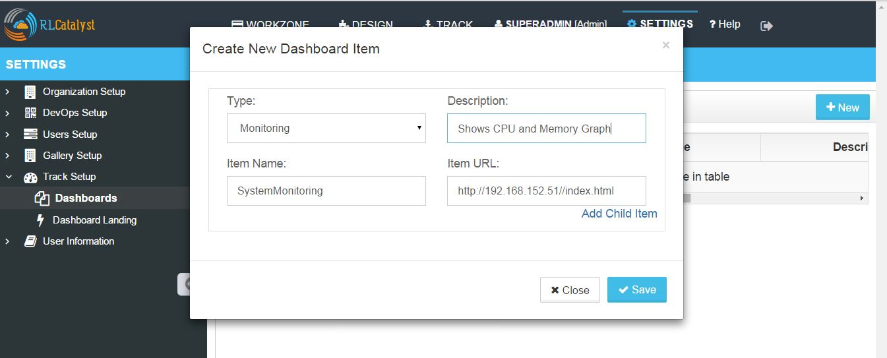

Track Setup¶
The Track Setup option in RL Catalyst provides you to add new dashboard items of type Provider, Monitoring, Logs and Notification options.
Adding New Dashboard Items in Track setup.
- From the main menu click on Settings
- Once you click on Settings, from the side menu click on Track Setup
- Click on Dashboards
- Click on New button provided
- Chose the Type. (Here I am selecting type as Monitoring)
- Enter the Description, Item Name and Item URL

- Click on Save button. Now you can see the added item in the table.

- Now Click on Track link available at the top and you will be able to see the Type Monitoring and the Name of the Dashboard SystemMonitoring in left side of the tree.